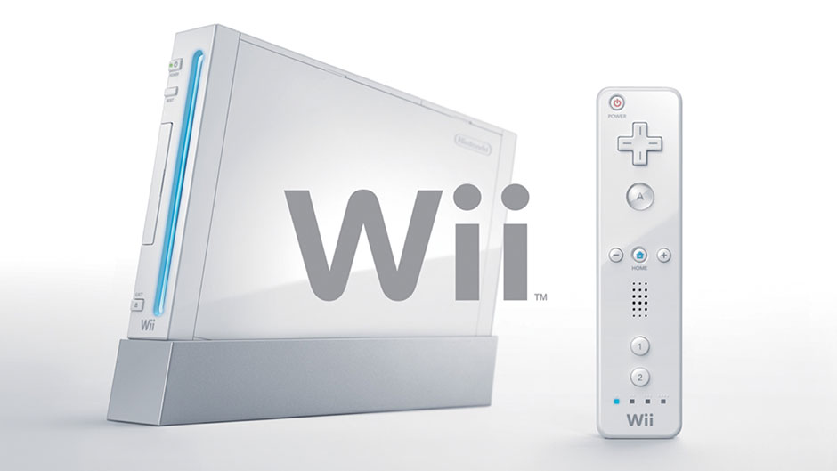
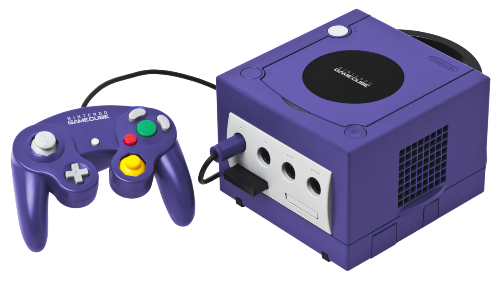

About
Nintendo Co., Ltd. is a Japanese multinational consumer electronics and video game company headquartered in Kyoto, Japan. Nintendo is one of the world's largest video game companies by market capitalization. Founded on 23 September 1889 by Fusajiro Yamauchi, it originally produced handmade hanafuda playing cards. By 1963, the company had tried several small niche businesses, such as cab services and love hotels. The word Nintendo can be roughly translated from Japanese to English as "leave luck to heaven". The company has created and released some of the best-known and top-selling video game franchises, such as Mario, The Legend of Zelda, and Pokémon.
Abandoning previous ventures in favor of toys in the 1960s, Nintendo then developed into a video game company in the 1970s, ultimately becoming one of the most influential in the industry and Japan's third most-valuable company with a market value of over $85 billion. From 1992 until 2016, Nintendo was also the majority shareholder of Major League Baseball's Seattle Mariners.
1979–2003: Success With Video Games
Main articles: Game & Watch, NES, Game Boy, SNES, Nintendo 64, and Game Boy Advance SP
In 1979, Gunpei Yokoi conceived the idea of a handheld video game, while observing a fellow bullet train commuter who passed the time by interacting idly with a portable LCD calculator, which gave birth to Game & Watch. In 1980, Nintendo launched Game & Watch—a handheld video game series developed by Yokoi. These systems do not contain interchangeable cartridges and thus the hardware was tied to the game. The first Game & Watch game released, titled Ball, was distributed worldwide. The modern "cross" D-pad design was developed in 1982, by Yokoi for a Donkey Kong version. Proven to be popular, the design was patented by Nintendo. It later earned a Technology & Engineering Emmy Award.
In 1983, Nintendo launched the Family Computer (colloquialized as "Famicom") home video game console in Japan, alongside ports of its most popular arcade titles. In 1985, a cosmetically reworked version of the system known outside Japan as the Nintendo Entertainment System or NES, launched in North America. The practice of bundling the system along with select games helped to make Super Mario Bros. one of the best-selling video games in history.
In 1988, Gunpei Yokoi and his team at Nintendo R&D1 conceived the new Game Boy handheld system, with the purpose of merging the two very successful ideas of the Game & Watch's portability along with the NES's cartridge interchangeability. Nintendo released the Game Boy in Japan on 21 April 1989, and in North America on 31 July 1989. Nintendo of America president Minoru Arakawa managed a deal to bundle the popular third party game Tetris along with the Game Boy, and the pair launched as an instant success.
In 1989, Nintendo announced plans to release the successor to the Famicom, the Super Famicom. Based on a 16-bit processor, Nintendo boasted significantly superior hardware specifications of graphics, sound, and game speed over the original 8-bit Famicom. The system was also said to have backwards compatibility with Famicom games, though this feature was ultimately cut upon release. The Super Famicom was finally released relatively late to the market in Japan on 21 November 1990, and released as the Super Nintendo Entertainment System (officially abbreviated the Super NES or SNES and commonly shortened to Super Nintendo) in North America on 23 August 1991 and in Europe in 1992. Its main rival was the 16-bit Mega Drive, known in North America as Genesis, which had been advertised aggressively against the nascent 8-bit NES. A console war between Sega and Nintendo ensued during the early 1990s. From 1990 to 1992, Nintendo opened World of Nintendo shops in the United States where consumers could test and buy Nintendo products.
In August 1993, Nintendo announced the SNES's successor, code-named Project Reality. Featuring 64-bit graphics, the new system was developed as a joint venture between Nintendo and North-American-based technology company Silicon Graphics. The system was announced to be released by the end of 1995, but was subsequently delayed. Meanwhile, Nintendo continued the Nintendo Entertainment System family with the release of the NES-101, a smaller redesign of the original NES. Nintendo also announced a CD drive peripheral called the Super NES CD-ROM Adapter, which was co-developed first by Sony with the name "Play Station" and then by Philips. Bearing prototypes and joint announcements at the Consumer Electronics Show, it was on track for a 1994 release, but was controversially cancelled.
During 1995, Nintendo announced that it had sold one billion game cartridges worldwide, ten percent of those being from the Mario franchise. Nintendo deemed 1994 the "Year of the Cartridge". To further their support for cartridges, Nintendo announced that Project Reality, which had now been renamed the Ultra 64, would not use a CD format as expected, but would rather use cartridges as its primary media format. Nintendo IRD general manager Genyo Takeda was impressed by video game development company Rare's progress with real-time 3D graphics technology, using state of the art Silicon Graphics workstations. As a result, Nintendo bought a 25% stake in the company, eventually expanding to 49%, and offered their catalogue of characters to create a CGI game around, making Rare Nintendo's first western-based second-party developer. Their first game as partners with Nintendo was Donkey Kong Country. The game was a critical success and sold over eight million copies worldwide, making it the second best-selling game in the SNES library. In September 1994, Nintendo, along with six other video game giants including Sega, Electronic Arts, Atari, Acclaim, Philips, and 3DO approached the United States Senate and demanded a ratings system for video games to be enforced, which prompted the decision to create the Entertainment Software Rating Board.
Aiming to produce an affordable virtual reality console, Nintendo released the Virtual Boy in 1995, designed by Gunpei Yokoi. The console consists of a head-mounted semi-portable system with one red-colored screen for each of the user's eyes, featuring stereoscopic graphics. Games are viewed through a binocular eyepiece and controlled using an affixed gamepad. Critics were generally disappointed with the quality of the games and the red-colored graphics, and complained of gameplay-induced headaches. The system sold poorly and was quietly discontinued. Amid the system's failure, Yokoi retired from Nintendo. During the same year, Nintendo launched the Satellaview in Japan, a peripheral for the Super Famicom. The accessory allowed users to play video games via broadcast for a set period of time. Various games were made exclusively for the platform, as well as various remakes.
In 1996, Nintendo released the Ultra 64 as the Nintendo 64 in Japan and North America. The console was later released in Europe and Australia in 1997. The Nintendo 64 continued what had become a Nintendo tradition of hardware design which is focused less on high performance specifications than on design innovations intended to inspire game development. With its market shares slipping to the Sega Saturn and partner-turned-rival Sony PlayStation, Nintendo revitalized its brand by launching a $185 million marketing campaign centered around the "Play it Loud" slogan. During the same year, Nintendo also released the Game Boy Pocket in Japan, a smaller version of the Game Boy that generated more sales for the platform. On 4 October 1997, famed Nintendo developer Gunpei Yokoi died in a car crash. In 1997, Nintendo released the SNS-101 (called Super Famicom Jr. in Japan), a smaller redesigned version of the Super Nintendo Entertainment System.
In 1998, the successor to the Game Boy, the Game Boy Color, was released. The system had improved technical specifications allowing it to run games made specifically for the system as well as games released for the Game Boy, albeit with added color. The Game Boy Camera and Printer were also released as accessories. In October 1998, Retro Studios was founded as an alliance between Nintendo and former Iguana Entertainment founder Jeff Spangenberg. Nintendo saw an opportunity for the new studio to create games for the upcoming GameCube targeting an older demographic, in the same vein as Iguana Entertainment's successful Turok series for the Nintendo 64.
In 2001, just three years later, Nintendo introduced the redesigned Game Boy Advance. The same year, Nintendo also released the GameCube to lukewarm sales, and it ultimately failed to regain the market share lost by the Nintendo 64. When Yamauchi, the company's president since 1949, retired on 24 May 2002, Satoru Iwata succeeded as Nintendo's fourth president, becoming the first Nintendo president who was unrelated to the Yamauchi family through blood or marriage since its founding in 1889.
In 2003, Nintendo released the Game Boy Advance SP, a redesign of the Game Boy Advance that featured a clamshell design that would later be used in Nintendo's DS and 3DS handheld video game systems
2004–2011: Nintendo DS and Wii
Main articles: Nintendo DS and Wii
In 2004, Nintendo released the Nintendo DS, its fourth major handheld system. The DS is a dual screened handheld featuring touch screen capabilities, which respond to either a stylus or the touch of a finger. Former Nintendo president and now chairman Hiroshi Yamauchi was translated by GameScience as explaining, "If we can increase the scope of the industry, we can re-energise the global market and lift Japan out of depression – that is Nintendo's mission." Regarding lukewarm GameCube sales which had yielded the company's first reported operating loss in over 100 years, Yamauchi continued: "The DS represents a critical moment for Nintendo's success over the next two years. If it succeeds, we rise to the heavens, if it fails, we sink into hell. "Thanks to titles such as Nintendogs and Mario Kart DS, the DS became a success. In 2005, Nintendo released the Game Boy Micro in North America, a redesign of the Game Boy Advance. The last system in the Game Boy line, it was also the smallest Game Boy, and the least successful. In the middle of 2005, Nintendo opened the Nintendo World Store in New York City, which would sell Nintendo games, present a museum of Nintendo history, and host public parties such as for product launches. The store was renovated and renamed as Nintendo New York in 2016.
In the first half of 2006, Nintendo released the Nintendo DS Lite, a version of the original Nintendo DS with lighter weight, brighter screen, and better battery life. In addition to this streamlined design, its prolific subset of casual games appealed to the masses, such as the Brain Age series. Meanwhile, New Super Mario Bros. provided a substantial addition to the Mario series when it was launched to the top of sales charts. The successful direction of the Nintendo DS had a big influence on Nintendo's next home console (including the common Nintendo Wi-Fi Connection), which had been codenamed "Revolution" and was now renamed to "Wii". In August 2006, Nintendo published ES, a now-dormant, open source research operating system project designed around web application integration but for no specific purpose.
In the latter half of 2006, Nintendo released the Wii as the backward-compatible successor to the GameCube. Based upon intricate Wii Remote motion controls and a balance board, the Wii inspired several new game franchises, some targeted at entirely new market segments of casual and fitness gaming. At more than 100 million units, the Wii is the best selling console of the seventh generation, regaining the market share lost during the tenures of the Nintendo 64 and the GameCube.
On 1 May 2007, Nintendo acquired an 80% stake on video game development company Monolith Soft, previously owned by Bandai Namco. Monolith Soft is best known for developing role-playing games such as the Xenosaga and Baten Kaitos series.
During the holiday season of 2008, Nintendo followed up the success of the DS with the release of the Nintendo DSi in Japan. The system features a more powerful CPU and more RAM, two cameras, one facing towards the player and one facing outwards, and had an online distribution store called DSiWare. The DSi was later released worldwide during 2009. In the latter half of 2009, Nintendo released the Nintendo DSi XL in Japan, a larger version of the DSi. This updated system was later released worldwide in 2010.
2011–2015: Nintendo 3DS and Wii U
Main articles: Nintendo 3DS and Wii U
In 2011, Nintendo released the Nintendo 3DS, based upon a glasses-free 3D display. In February 2012, Nintendo acquired Mobiclip, a France-based research and development company specialized in highly optimized software technologies such as video compression. The company's name was later changed to Nintendo European Research & Development. During the fourth quarter of 2012, Nintendo released the Wii U. It sold slower than expected, despite being the first eighth generation console. By September 2013, however, sales had rebounded. Intending to broaden the 3DS market, Nintendo released 2013's cost-reduced Nintendo 2DS. The 2DS is compatible with but lacks the 3DS's more expensive but cosmetic autostereoscopic 3D feature. Nintendo also released the Wii Mini, a cheaper and non-networked redesign of the Wii.
On 25 September 2013, Nintendo announced it had purchased a 28% stake in a Panasonic spin-off company called PUX Corporation. The company specializes in face and voice recognition technology, with which Nintendo intends to improve the usability of future game systems. Nintendo has also worked with this company in the past to create character recognition software for a Nintendo DS touchscreen. After announcing a 30% dive in profits for the April to December 2013 period, president Satoru Iwata announced he would take a 50% pay-cut, with other executives seeing reductions by 20%–30%.

In January 2015, Nintendo announced its exit from the Brazilian market after four years of distributing products in the country. Nintendo cited high import duties and lack of local manufacturing operation as reasons for leaving. Nintendo continues its partnership with Juegos de Video Latinoamérica to distribute products to the rest of Latin America.
On 11 July 2015, Iwata died from a bile duct tumor at the age of 55. Following his death, representative directors Genyo Takeda and Shigeru Miyamoto jointly led the company on an interim basis until the appointment of Tatsumi Kimishima as Iwata's successor on 16 September 2015. In addition to Kimishima's appointment, the company's management organization was also restructured—Miyamoto was named "Creative Fellow" and Takeda was named "Technology Fellow".
2015–present: Mobile and Nintendo Switch
Main article: Nintendo Switch
On 17 March 2015, Nintendo announced a partnership with Japanese mobile developer DeNA to produce games for smart devices. The first of these, Miitomo, was released in March 2016.
On the same day, Nintendo announced a new "dedicated games platform with a brand new concept" with the codename "NX" that would be further revealed in 2016. Reggie Fils-Aimé, president of Nintendo of America, referred to NX as "our next home console" in a June 2015 interview with The Wall Street Journal. In a later 16 October 2015 article, The Wall Street Journal relayed speculation from unnamed inside sources that, although unknown, the NX was intended to feature "industry leading" hardware specifications and be usable as both a home and portable console. It was also reported that Nintendo had begun distributing software development kits (SDKs) for NX to third-party developers, with the unnamed source further speculating that these moves "[suggest that] the company is on track to introduce [NX] as early as [2016]."At an investor's meeting on 27 April 2016, Nintendo announced that the NX would be released worldwide in March 2017. In an interview with Asahi Shimbun in May 2016, Kimishima stated that the NX was a new concept that would not succeed the 3DS or Wii U product lines. At a shareholders' meeting following E3 2016, Shigeru Miyamoto stated that the company chose not to present the NX during the conference due to concerns that competitors could copy from it if they revealed it too soon. The same day, Kimishima also revealed during a Q&A session with investors that they were also researching virtual reality.
In May 2015, Universal Parks & Resorts announced that it was partnering with Nintendo to create attractions at Universal theme parks based upon Nintendo properties. In May 2016, Nintendo also expressed a desire to enter the animated film market. In November 2016, it was stated that the area to be created at Universal theme parks is known as Super Nintendo World, which will be completed by 2020 at Universal Studios Japan in time of the 2020 Tokyo Olympics, whereas Universal Orlando Resort and Universal Studios Hollywood will get the themed area in an unspecified date after the Japanese version.
In July 2016, the company announced it was bringing back the NES in the form of the NES Classic Edition (called Nintendo Classic Mini in Europe). The plug-and-play console will support HDMI, two-player modes, and have a controller similar to the original NES controller. The controller would be able to connect to a Wii Remote for use with Wii and Wii U Virtual Console titles. The NES Classic Edition came with 30 games pre-installed, including Final Fantasy, Kid Icarus, The Legend of Zelda, Zelda II: The Adventure of Link, and Dr. Mario, among others. It was released in November 2016. Additional controllers were also available.

The July 2016 release of the Pokémon Go mobile app by Niantic caused shares in Nintendo to double, due to investor misunderstanding that the software was the property of Nintendo. Later that month, Nintendo released a statement clarifying its relation with Niantic, Nintendo stated it owned 32% of Pokémon intellectual property owner The Pokémon Company, and though it would receive some licensing and other revenues from the game it expected the impact on Nintendo's total income to be limited. As a result of the statement Nintendo's share price fell substantially, losing 17% in one day of trading. After a reduction in shareprice from the Pokémon Go peak, the company was still valued at over 100 times its net income, a price–earnings ratio greatly exceeding the average on the Nikkei 225.Analysts speaking to Bloomberg L.P. and the Financial Times both commented on the potential future value of Nintendo's IP if transferred to the mobile phone game business.
In August 2016, Nintendo of America sold 90% of its controlling stake (55%) in the Seattle Mariners to a group of investors led by mobile phone businessman John Stanton for $640 million.
After the announcement of the mobile game Super Mario Run in September 2016, Nintendo's stock soared to just under its recent high point after the release and success of Pokémon Go earlier in the year, something noted by journalists as even more significant than Pokémon Go, as Super Mario Run was developed in-house by Nintendo, which was not the case with Pokémon Go. In a December 2016 interview prior to the release of Super Mario Run, Miyamoto explained that the company believed that with some of their game franchises, "the longer you continue to make a series, the more complex the gameplay becomes, and the harder it becomes for new players to be able to get into the series", and that the company sees mobile games with simplified controls, such as Super Mario Run, not only allows them to "make a game that the broadest audience of people could play", but to also reintroduce these properties to newer audiences and draw them to their consoles.
Products
Home Consoles
Nintendo Entertainment System
Main articles: Nintendo Entertainment System and NES Classic Edition
The Nintendo Entertainment System (abbreviated as NES) is an 8-bit video game console, which released in North America in 1985, and in Europe throughout 1986 and 1987. The console was initially released in Japan as the Family Computer (abbreviated as Famicom) in 1983. The best-selling gaming console of its time, the NES helped revitalize the US video game industry following the video game crash of 1983. With the NES, Nintendo introduced a now-standard business model of licensing third-party developers, authorizing them to produce and distribute titles for Nintendo's platform. The NES was bundled with Super Mario Bros., one of the best-selling video games of all time, and received ports of Nintendo's most popular arcade titles.
Nintendo also produced a limited run of the NES Classic Edition in 2016. The NES Classic System was a dedicated console modeled after an NES with 30 built-in classic first- and third-party games from the NES library. By the end of its production in April 2017, Nintendo shipped 2.3 million units.
Super Nintendo Entertainment System
Main articles: Super Nintendo Entertainment System and Super NES Classic Edition
The Super Nintendo Entertainment System (abbreviated as the Super NES or SNES) is a 16-bit video game console, which was released in North America in 1991, and in Europe in 1992. The console was initially released in Japan in 1990 as the Super Famicom, officially adopting the colloquially abbreviated name of its predecessor. The console introduced advanced graphics and sound capabilities compared with other consoles at the time. Soon, the development of a variety of enhancement chips which were integrated onto each new game cartridge's circuit boards, progressed the SNES's competitive edge. While even crude three-dimensional graphics had previously rarely been seen on home consoles, the Super NES's enhancement chips suddenly enabled a new caliber of games containing increasingly sophisticated faux 3D effects as seen in 1991's Pilotwings and 1992's Super Mario Kart. Argonaut Games developed the Super FX chip in order to replicate 3D graphics from their earlier Atari ST and Amiga Starglider series on the Super NES (more specifically, Starglider 2), starting with Star Fox in 1993. The SNES is the best-selling console of the 16-bit era although having experienced a relatively late start and fierce competition from Sega's Mega Drive/Genesis console.
Nintendo also plans to release a limited run of the Super NES Classic Edition in September 2017 through the end of the year. Like the NES Classic Edition, the Super NES Classic Edition is a dedicated console with 21 built-in games from its library, including the never-before-released Starfox 2.
Nintendo 64
Main article: Nintendo 64
The Nintendo 64 was released in 1996, featuring 3D polygon model rendering capabilities and built-in multiplayer for up to four players. The system's controller introduced the analog stick and later introduced the Rumble Pak, an accessory for the controller that produces force feedback with compatible games. Both are the first such features to have come to market for home console gaming and eventually became the de facto industry standard. Announced in 1995, prior to the console's 1996 launch, the 64DD ("DD" standing for "Disk Drive") was designed to enable the development of new genre of video games by way of 64 MB writable magnetic disks, video editing, and Internet connectivity. Eventually released only in Japan in 1999, the 64DD peripheral's commercial failure there resulted in only nine games being released and precluded further worldwide release.
GameCube
Main article: GameCube
The GameCube (officially called Nintendo GameCube, abbreviated NGC in Japan and GCN in North America) was released in 2001, in Japan and North America, and in 2002 worldwide. The sixth-generation console is the successor to the Nintendo 64 and competed with Sony's PlayStation 2, Microsoft's Xbox, and Sega's Dreamcast. The GameCube is the first Nintendo console to use optical discs as its primary storage medium. The discs are similar to the miniDVD format, but the system was not designed to play standard DVDs or audio CDs. Nintendo introduced a variety of connectivity options for the GameCube. The GameCube's game library has sparse support for Internet gaming, a feature that requires the use of the aftermarket Nintendo GameCube Broadband Adapter and Modem Adapter. The GameCube supports connectivity to the Game Boy Advance, allowing players to access exclusive in-game features using the handheld as a second screen and controller.
Wii
Main article: Wii
The Wii was released during the holiday season of 2006 worldwide. The system features the Wii Remote controller, which can be used as a handheld pointing device and which detects movement in three dimensions. Another notable feature of the console is WiiConnect24, which enables it to receive messages and updates over the Internet while in standby mode. It also features a game download service, called "Virtual Console", which features emulated games from past systems. Since its release, the Wii has spawned many peripheral devices, including the Wii Balance Board and Motion Plus, and has had several hardware revisions. The Wii Family Edition variant is identical to the original model, but is designed to sit horizontally and removes the GameCube compatibility. The Wii Mini is a smaller, redesigned Wii which lacks GameCube compatibility, online connectivity, the SD card slot and Wi-Fi support, and has only one USB port unlike the previous models' two. As of 31 March 2017, Nintendo reports sales of 101.63 million Wii hardware units and 914.28 million Wii software units worldwide, making it Nintendo's best-selling home video game console.
Wii U
Main article:Wii U
The Wii U, the successor to the Wii, was released during the holiday season of 2012 worldwide. The Wii U is the first Nintendo console to support high-definition graphics. The Wii U's primary controller is the Wii U GamePad, which features an embedded touchscreen. Each software title may be designed to utilize this touchscreen as being supplemental to the main TV, or as the only screen for Off-TV Play. The system supports most Wii controllers and accessories, and the more classically shaped Wii U Pro Controller. The system is backward compatible with Wii software and accessories; this mode also utilizes Wii-based controllers, and it optionally offers the GamePad as its primary Wii display and motion sensor bar. The console has various online services powered by Nintendo Network, including: the Nintendo eShop for online distribution of software and content; and Miiverse, a social network which can be variously integrated with games and applications. As of 31 March 2017, worldwide Wii U sales had totaled 12.80 million hardware units and 84.04 million software units.

Nintendo Switch
Main article: Nintendo Switch
On 17 March 2015, Nintendo announced a new "dedicated games platform with a brand new concept" with the codename "NX" that would be further revealed in 2016. Reggie Fils-Aimé, president of Nintendo of America, referred to NX as "our next home console" in a June 2015 interview with The Wall Street Journal. In a later article on 16 October 2015, The Wall Street Journal relayed speculation from unnamed inside sources that, although the NX hardware specifications were unknown, it may be intended to feature "industry leading" hardware specifications and include both a console and a mobile unit that could either be used with the console or taken on the road for separate use. It was also reported that Nintendo had begun distributing software development kits (SDKs) for NX to third-party developers, with the unnamed source further speculating that these moves "[suggest that] the company is on track to introduce [NX] as early as [2016]." At an investor's meeting on 27 April 2016, Nintendo announced that the NX would be released worldwide in March 2017. In an interview with Asahi Shimbun in May 2016, Kimishima referred to the NX as "neither the successor to the Wii U nor to the 3DS", as well as it being a "new way of playing games," but it would "slow Wii U sales" upon reveal and dissemination. In June 2016, Miyamoto stated that the reason Nintendo had not released any information on the "NX" up until that point was because they were afraid of imitators, saying he and Nintendo thought other companies could copy "an idea that [they're] working on."The same day, Kimishima revealed during a Q&A session with investors that they were also researching virtual reality. On 19 October 2016, Nintendo announced they would release a trailer for the console the following day. The next day, Nintendo unveiled the trailer that revealed the final name of the platform called Nintendo Switch. As of 31 March 2017, worldwide Nintendo Switch sales had totaled 2.74 million hardware units and 5.46 million software units.
Handheld Consoles
Game & Watch
Main article: Game & Watch
Game & Watch is a line of handheld electronic games produced by Nintendo from 1980 to 1991. Created by game designer Gunpei Yokoi, each Game & Watch features a single game to be played on an LCD screen in addition to a clock, an alarm, or both. It was the earliest Nintendo product to garner major success.
Game Boy
Main article: Game Boy line
After the success of the Game & Watch series, Yokoi developed the Game Boy handheld console, which was released in 1989. Eventually becoming the best-selling handheld of all time, the Game Boy remained dominant for more than a decade, seeing critically and commercially popular games such as Pokémon Yellow released as late as 1998 in Japan, 1999 in North America, and 2000 in Europe. Incremental updates of the Game Boy, including Game Boy Pocket, Game Boy Light and Game Boy Color, did little to change the original formula, though the latter introduced color graphics to the Game Boy line
The first major update to its handheld line since 1989, Game Boy Advance features improved technical specifications similar to those of the SNES. The Game Boy Advance SP was the first revision to the GBA line and introduced screen lighting and a clam shell design, while later iteration, the Game Boy Micro, brought a smaller form factor.
Nintendo DS
Main articles: Nintendo DS and Nintendo DS line
Although originally advertised as an alternative to the Game Boy Advance, the Nintendo DS replaced the Game Boy line after its initial release in 2004. It was distinctive for its dual screens and a microphone, as well as a touch-sensitive lower screen. The Nintendo DS Lite brought a smaller form factor while the Nintendo DSi features larger screens and two cameras, and was followed by an even larger model, the Nintendo DSi XL, with a 90% bigger screen.
Nintendo 3DS
Main articles: Nintendo 3DS and Nintendo 3DS family
Further expanding the Nintendo DS line, the Nintendo 3DS uses the process of autostereoscopy to produce a stereoscopic three-dimensional effect without glasses. Released to major markets during 2011, the 3DS got off to a slow start, initially missing many key features that were promised before the system launched. Partially as a result of slow sales, Nintendo stock declined in value. Subsequent price cuts and game releases helped to boost 3DS and 3DS software sales and to renew investor confidence in the company. As of August 2013, the 3DS was the best selling console in the United States for four consecutive months. The Nintendo 3DS XL was introduced in August 2012 and includes a 90% larger screen, a 4 GB SD card and extended battery life. In August 2013, Nintendo announced the cost-reduced Nintendo 2DS, a version of the 3DS without the 3D display. It has a slate-like design as opposed to the hinged, clamshell design of its predecessors.
A hardware revision, New Nintendo 3DS, was unveiled in August 2014. It is produced in a standard-sized model and a larger XL model; both models feature upgraded processors and additional RAM, an eye-tracking sensor to improve the stability of the autostereoscopic 3D image, colored face buttons, and near-field communication support for native use of Amiibo products. The standard-sized model also features slightly larger screens, and support for faceplate accessories.